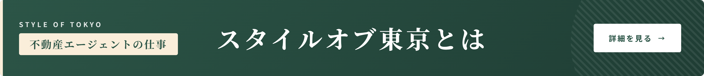
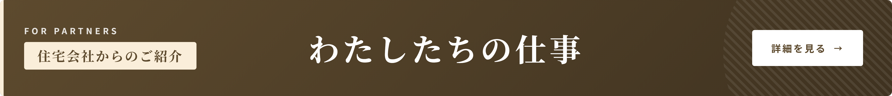

— トップページ末尾のイメージ（税理士提携の下にCONCEPT/PARTNERSが並ぶ） —


このプレビューについて
実際の styleoftokyo.jp トップでは、SWELLテーマの背景（薄グレー#f7f7f7）に同じ間隔で3枚が並ぶイメージです。
色のバランスを意識して：
・税理士提携＝ライト緑（既存）
・スタイルオブ東京とは＝ダーク緑（深い哲学的トーン）
・住宅会社からのご紹介＝ダーク茶（土・木材を連想する温かみ）
と差別化しています。